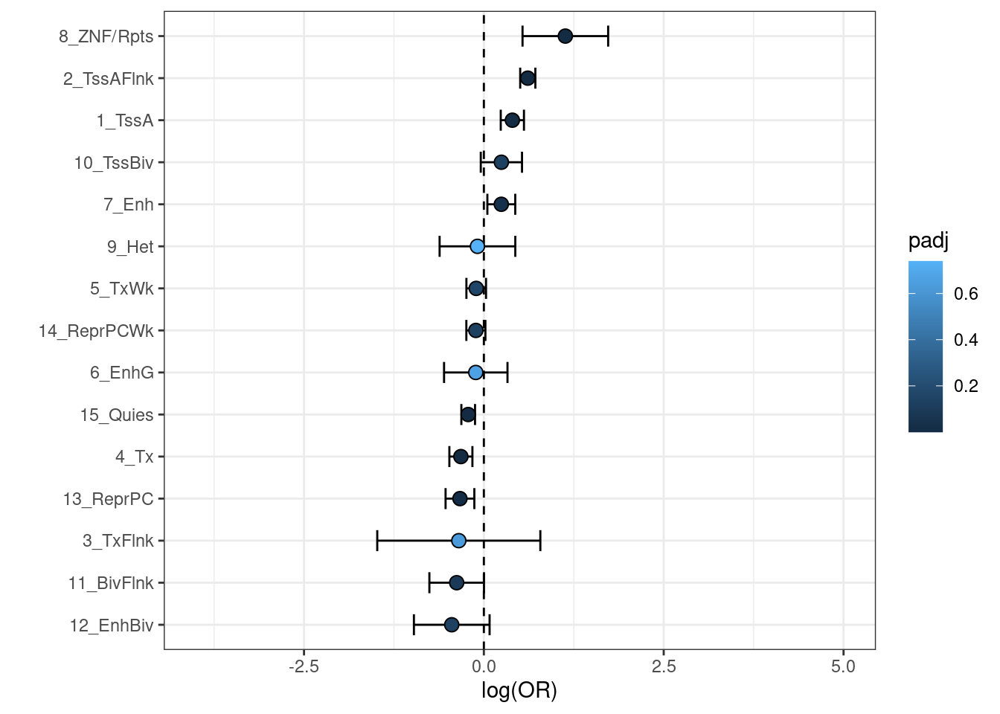

Top CpGs
Adjusting for multiple testing
It is important to adjust p-values for multiple testing before performing any downstream analysis. The p.adjust method can be set to either:
fdr- less strict, often used for correlated measures like metabolites orbonferroni- more strict, adjusts for all CpGs indepednently
Fetching top hits
After adjusting for multiple CpGs, top hits can be extracted and inspected.
top_cpgs <- limma_base %>%
filter(padj <= 0.05) %>%
arrange(padj)
print(paste0("There are ",
nrow(top_cpgs), " significant CpGs"))## [1] "There are 108274 significant CpGs"print(paste0(nrow(top_cpgs %>% filter(beta<0)),
" of these are hypomethylated, and ",
nrow(top_cpgs %>% filter(beta>0)),
" are hypermethylated."))## [1] "34900 of these are hypomethylated, and 73374 are hypermethylated."Volcano plot
Significant CpGs can be visualized using a volcano plot. First limits for the plot are extracted.
if(nrow(top_cpgs) >= 1){
sig_limit <- max(top_cpgs$p)
} else {
sig_limit <- 10E-07
}
min <- as.numeric(min(
abs(limma_base$beta),
na.rm=TRUE))
max <- as.numeric(max(
abs(limma_base$beta),
na.rm=TRUE))
p_max <- as.numeric(-log10(min(limma_base$p, na.rm=TRUE))) + 2Then the results can be visualized.
plot <- limma_base %>%
ggplot(aes(x = beta, y = -log10(p))) +
geom_hline(yintercept = -log10(sig_limit),
linetype = "dashed") +
geom_point(color = ifelse(limma_base$p > sig_limit,
"#BBBBBB","#4477AA")) +
ylab(bquote(-log[10]~"p")) +
xlab("Effect Size") +
theme_bw()
print(plot)
Enrichment analyses
Motivation
A simple list of CpGs gives little information about their relevance. Enrichment analyses can shine light on how best to interpret EWAS results and what may be driving the methylation signal.
Here we give an example for chromatin state enrichment, but a similar principle can be applied to investigate enrichment for trait associations using previous EWAS results or CpG islands, for example.
This is also only one type of follow-up analysis. Some other ideas include:
- Performing bidirectional two-sample Mendelian randomization between DNAm at identified CpGs and the trait to infer causal directions.
- Transcription factor binding site enrichment analysis using HOMER32
- Improving CpG-gene annotations with integrative analyses (e.g. using BIOS data) or genetic colocalization (e.g. using
coloc)
Annotations
The Zhou lab GitHub page15 also provides Roadmap annotations for CpGs, on the basis of the original Roadmap reference epigenomes28. These annotations can be imported to annotate measured CpGs to chromatin states.
First, we import the location annotations from before.
## Rows: 865918 Columns: 57
## ── Column specification ────────────────────────────────────────────────────────
## Delimiter: "\t"
## chr (21): CpG_chrm, probe_strand, probeID, channel, designType, nextBase, ne...
## dbl (24): CpG_beg, CpG_end, address_A, address_B, probeCpGcnt, context35, pr...
## lgl (12): posMatch, MASK_mapping, MASK_typeINextBaseSwitch, MASK_rmsk15, MAS...
##
## ℹ Use `spec()` to retrieve the full column specification for this data.
## ℹ Specify the column types or set `show_col_types = FALSE` to quiet this message.anno <- manifest_hg19 %>%
dplyr::select(
cpg = probeID,
cpg_chr = CpG_chrm,
cpg_start = CpG_beg,
cpg_end = CpG_end,
cpg_strand = probe_strand,
gene_HGNC
) %>%
mutate(
cpg_chr = substr(cpg_chr,4,5)
)
anno <- anno %>%
dplyr::filter(cpg %in% limma_base$cpg)Next, we import the chromatin state annotations. In this instance we use the PBMC (E062) reference epigenome, but there are reference epigenomes for many distinct cell types and tissues available28. This is bound to the results data frame.
## Rows: 865918 Columns: 131
## ── Column specification ────────────────────────────────────────────────────────
## Delimiter: "\t"
## chr (129): CpG_chrm, probeID, E001, E002, E003, E004, E005, E006, E007, E008...
## dbl (2): CpG_beg, CpG_end
##
## ℹ Use `spec()` to retrieve the full column specification for this data.
## ℹ Specify the column types or set `show_col_types = FALSE` to quiet this message.manifest_chrom <- manifest_chrom %>%
dplyr::select(cpg = probeID, E062)
anno <- left_join(anno, manifest_chrom, by="cpg")
limma_base <- left_join(limma_base, anno, by="cpg")Running enrichment
Available states are stored as a vector.
states <- c("15_Quies", "14_ReprPCWk", "13_ReprPC",
"12_EnhBiv", "11_BivFlnk", "10_TssBiv",
"9_Het", "8_ZNF/Rpts", "7_Enh",
"6_EnhG", "5_TxWk", "4_Tx",
"3_TxFlnk", "2_TssAFlnk", "1_TssA")Then, we can run the enrichment analysis using logistic regression.
for(i in states){
res_road <- limma_base %>%
mutate(
sig = ifelse(limma_base$cpg %in% top_cpgs$cpg, 1, 0),
chrom = ifelse(grepl(i, E062), 1, 0)
)
x <- glm(chrom ~ sig, family=binomial, data=res_road)
out <- c(coef(summary(x))[2,],
exp(cbind(coef(x), confint.default(x)))[2,])
names(out) <- c('logOR', 'SE', 'z', 'p', 'OR', 'low_CI', 'upp_CI')
out <- as.data.frame(t(out))
out$Trait = i
out <- out %>% dplyr::select(Trait, OR, logOR,
low_CI, upp_CI, z, p)
if(i == states[1]){
res <- out
} else {
res <- rbind(res, out)
}
}P-values again need to be adjusted for multiple testing.
Visualization
These results can be visualized using a forest plot.
chrom <- res %>%
mutate(
loglowCI = log(low_CI),
loguppCI = log(upp_CI),
padj = p.adjust(p, method='fdr')
) %>%
filter(OR < 200)
chrom %>% filter(padj < 0.05)## Trait OR logOR low_CI upp_CI z
## 1 14_ReprPCWk 1.0975384 0.09306986 1.0769494 1.1185210 9.632432
## 2 13_ReprPC 0.9121847 -0.09191275 0.8877549 0.9372868 -6.635975
## 3 12_EnhBiv 0.9017869 -0.10337706 0.8433352 0.9642899 -3.023491
## 4 11_BivFlnk 0.7653395 -0.26743574 0.7256514 0.8071983 -9.843507
## 5 10_TssBiv 0.8464418 -0.16671379 0.8034076 0.8917812 -6.262121
## 6 8_ZNF/Rpts 1.1830920 0.16813132 1.0184977 1.3742855 2.199770
## 7 7_Enh 1.1363899 0.12785645 1.1009017 1.1730220 7.898478
## 8 6_EnhG 1.2617928 0.23253355 1.1894714 1.3385114 7.721488
## 9 5_TxWk 1.0691203 0.06683620 1.0483494 1.0903028 6.676930
## 10 4_Tx 1.0537546 0.05235958 1.0316977 1.0762830 4.851251
## 11 2_TssAFlnk 0.8620689 -0.14842013 0.8444516 0.8800537 -14.088628
## 12 1_TssA 0.9191804 -0.08427288 0.8919303 0.9472630 -5.488465
## p padj loglowCI loguppCI
## 1 5.833211e-22 2.916606e-21 0.07413242 0.11200730
## 2 3.223649e-11 6.907819e-11 -0.11905958 -0.06476592
## 3 2.498768e-03 3.407411e-03 -0.17039077 -0.03636335
## 4 7.311692e-23 5.483769e-22 -0.32068551 -0.21418598
## 5 3.797750e-10 7.120780e-10 -0.21889307 -0.11453450
## 6 2.782325e-02 3.477906e-02 0.01832866 0.31793399
## 7 2.823289e-15 1.058733e-14 0.09612958 0.15958333
## 8 1.149794e-14 3.449383e-14 0.17350900 0.29155811
## 9 2.439988e-11 6.099969e-11 0.04721693 0.08645548
## 10 1.226852e-06 1.840278e-06 0.03120567 0.07351348
## 11 4.461444e-45 6.692166e-44 -0.16906785 -0.12777240
## 12 4.054419e-08 6.757365e-08 -0.11436724 -0.05417853plot <- chrom %>%
filter(loglowCI > -4) %>%
ggplot(aes(x = logOR,
y = reorder(Trait,logOR),
xmin = loglowCI,
xmax = loguppCI)) +
geom_vline(xintercept=0, linetype='dashed') +
geom_errorbar(width=0.5,
position=position_dodge(width=0.9)) +
geom_point(aes(fill=padj),
size=3,
shape=21,
position=position_dodge(width=0.9)) +
xlab('log(OR)') + ylab('') + xlim(c(-4,5)) +
theme_bw()
print(plot)